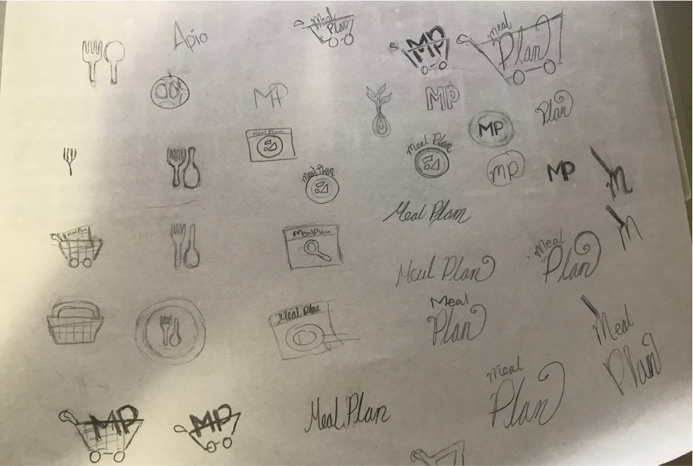
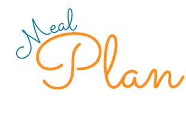
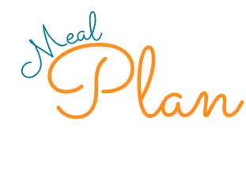
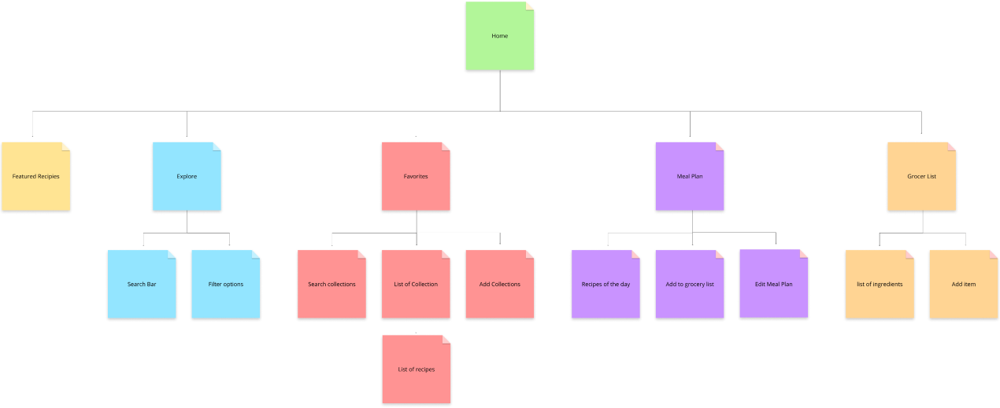
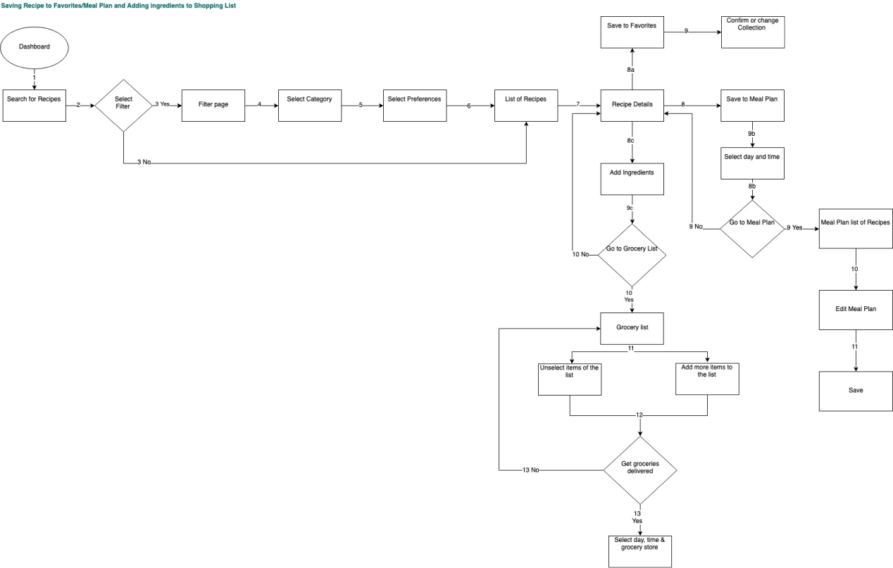
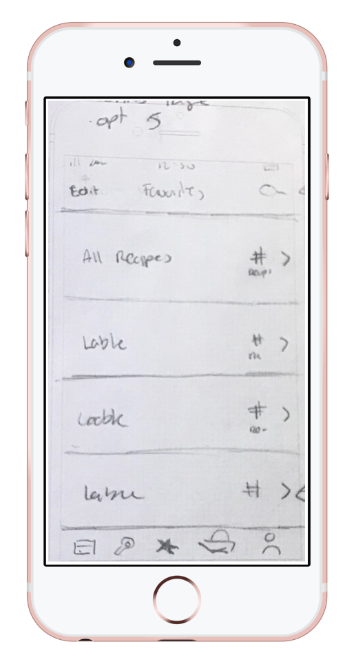
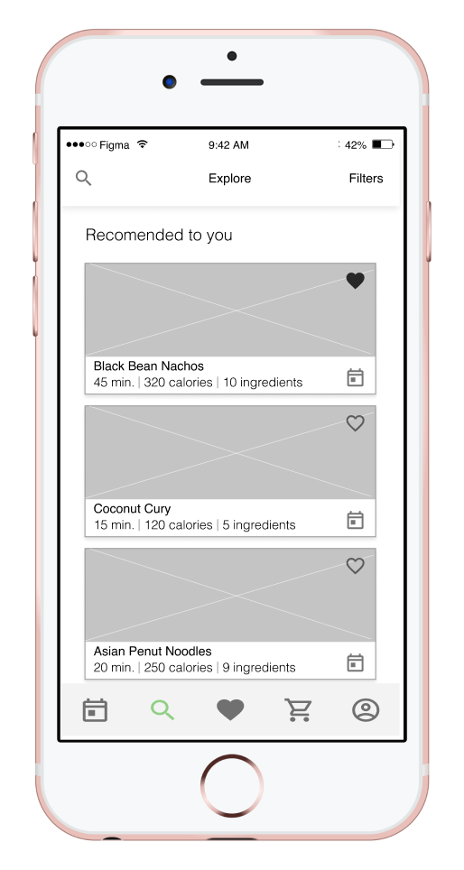
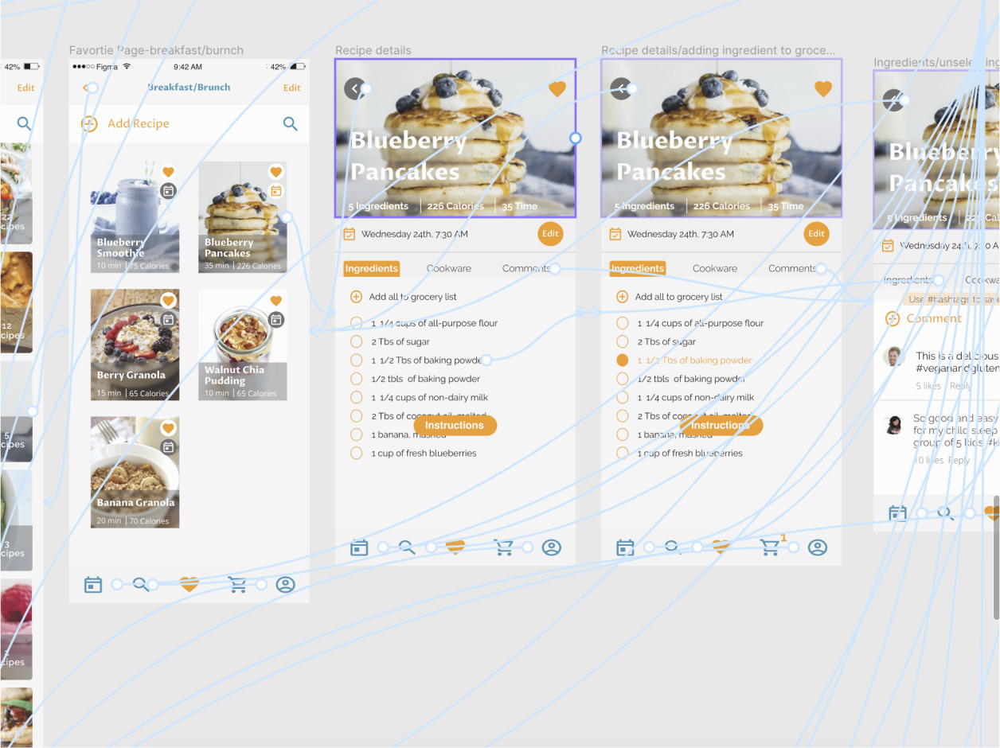
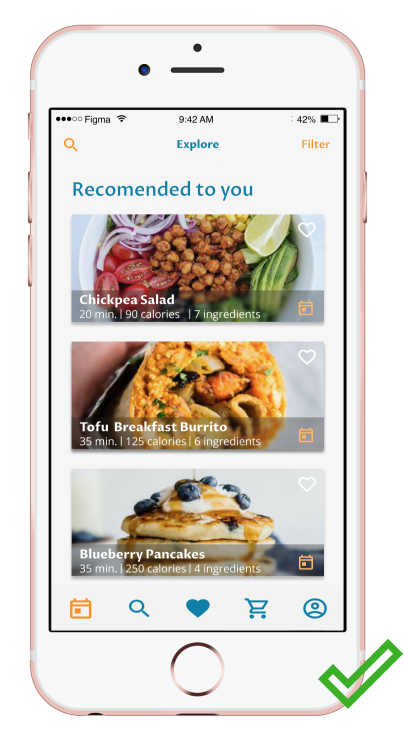

Design Role
- UX design
- Visual design
- Brand & identity
Meal Plan is an application tool where users can find, save, upload, share recipes, and easily create a meal plan and grocery list for the week.
As a typical household member, I found myself really struggling between finding my favorite recipes, coordinating with my partner in planning the weekly meals, putting together a grocery list and finally doing the grocery shopping. This daunting and time-consuming process oftentimes leads us to eat out more often than we want to and not sticking to the healthy diet we strive for. Soon I learned that just like me, other people have similar struggles as well.
In the time working on this project, I decided to focus on the key features, however, the app is set up to do more as it progresses.
Building a Meal Plan app just for my needs is good enough of an excuse however, I needed to make sure this project would be also helpful to many other users. In order to design a product that would help many users, I performed an extensive user experience research.
I conducted a survery to learn abou the dynamics of grocery shopping and meal making and planning. Here is what I learned:
To gain a deeper understanding of my users, I chatted with 3 participants from various backgrounds. This gave me perspective about their motivations and frustrations
Recipe apps are not a new thing, in fact, there are many applications out there that would offer a combination of features. From my research, I picked two strongest competitors, Yummily and Mealime. and performed a SWOT. I learned that both apps have great strengths, however, I could see a lot of potential for Meal Plan.
To find Meal Plan's identity, I first jot down the feelings Meal Plan wanted to evoke.
Then I went into drawing; I lead my mind free to explore...
Finally, I chose the name and logo.... and gavie it color
 

I chose light background to give the app a sense of cleanness and order
The primary color is orange because is often represented for food and also adds some warmth and fun into the app.
As a secondary color, I used this tone of blue since it contrasts well with orange and also adds to the clean look.
To put all those beautiful ideas together and guide the app as it progresses, I made a style board.

With the new information from my research findings, I was able to move forward onto the information architecture phase.
By doing user stories, I was able to prioritize the features I should first work on Meal Plan. Since I gather a lot of great ideas for features I could incorporate in Meal Plan, prioritizing on the MVP, helped me focus.
I created a digital route-map to layout the content. This helped me organize the MVP
I created user flows to help me organize the process an certain tasks,
With the MVP and user flows in place, I then move on to sketching. Once I was happy with one desing, I created wireframes using Figma.
 The idea here was to put togeher my desing on a timely manner so i could then test it and refind the desing
I ran prototype, mockup and preference testing to gain users’ perspective. The feedback I got from the participants really help me shape this app mockup, and gave me great ideas for future features.
I conducted prototype/mockup testing which allowed me to find issues I needed to resolve to make this app more user-friendly
Preference testing helped me decide between some visual design options. Using User Hub, I have the participants choose their favorite desing
After conducting multiple testing, I was able to fix and improve the app to a high-fidelity mockup.
Meal Plan was a fun project to work on. This mockup project covers the basic features, however, this app is designed to grow to include a lot more helpful tools. Along the process, I learned a lot about how to design a project from identifying a problem to design. The biggest take away would be the importance of testing; It’s essential to include the perspective from the users, so this app can work for everyone.